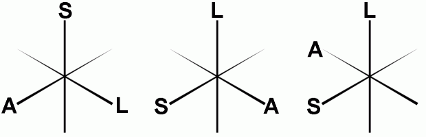
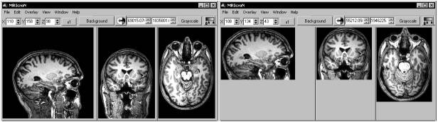
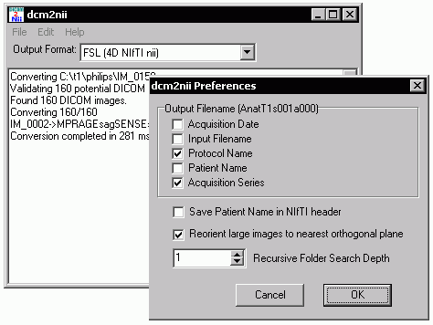

| dcm2nii DICOM to NIfTI conversion |
|
| Introduction
Important note: dcm2nii is still beta software - please carefully monitor the output from this software. In particular, be aware of potential left-right flipping. This has only been tested with Philips Intera DICOM, Siemens Trio DICOM and Philips Intera PAR/REC images. This software is provided under the BSD license. DCM2NII attempts to convert images from the proprietary scanner format to the NIfTI format used by FSL, SPM5, MRIcron and many other brain imaging tools. NIfTI is a modern incarnation of the Analyze format, but includes important information like the orientation of the image. DCM2NII is a stand-alone program that is distributed with MRIcron. It is natively compiled for Windows, Linux x86, Mac OSX PPC and Mac OSX x86.
Installation
Running DCM2NII There are two ways to run dcm2nii
To use dcm2nii by dragging and dropping:
Reorienting to canonical space The NIfTI format stores spatial transforms so that software can determine the oreintation of the image. This means that MRIcron can display the image with an intuitive orientation. However, many programs ignore these transforms, and display the images as they are saved to disk (e.g. FSLview, MRIcro) - this means that a sagittally acquired scan appears very differently from an axially acquired scan. In fact, the three spatial dimensions (left-right, anterior-posterior, superior-inferior) can be saved in 48 different orthogonal orientations. The drawing below shows just three of these possible orientations. You can set dcm2nii to reorient all images so they are all aligned to the nearest orthogonal direction to 'canonical space' (i.e. as close as possible to the rotation matrix [1 0 0; 0 1 0; 0 0 1]). This means programs like FSLview and MRIcro will display the images in a sensible orientation, regardless of the acquisition. The NIfTI transform codes the residual oblique orientations, so no information is lost in this tranformation. However, you will only want to orient anatomical scans to canonical space - reorienting fMRI data can disrupt slice timing correction (as the software assumes that the slice order of the stored data is correlated with the time of acquisition). Reorienting can also disrupt analysis of the DTI data (as the diffusion directions are not adjusted for the change in image orientation). Therefore, the "MinReorientMatrix" allows you to adjust which images will be reoriented - a value of 255 ensures that T1/T2 scans (typically with a 256x256 matrix) are reoriented, while fMRI (~64x64) and DTI (~128x128) scans are not. If you do not want any scans reoriented, reset this to a very large value (e.g. 5000). After reorienting, dcm2nii will attempt to 'autocrop' T1-weighted anatomical images (images with a Echo Time [TE] of less than 20ms). A new copy of the image is created with the prefix 'c' that attempts to remove excess air surrounding the individual as well as parts of the neck below the cerebellum. This excess neck can disrupt normalization of images (as the template images do not have similar neck regions). This new image has a slightly different NIfTI transform - the origin is adjusted to compensate for the removed portions of the image. The image below shows a T1-weighted scan before and after cropping.  As a final note, reorienting images is useful if you want to create masks for an image to use with SPM or FSL. These programs require that the mask image has precisely the same dimensions as the image it is designed to mask. In these cases, you can not apply the precise spatial transforms to an image (as the oblique orientation corrections means that the resulting drawing will have different dimensions than the original image. Therefore, you will want to draw a mask on on a image that has not used the fine spatial transforms. You can use MRIcro or FSLview to do this (as they ignore these transforms). If yu use MRIcron, select Help/Preferences and uncheck the 'Reorient (reslice) images when loading' option - this will ensure that the raw image is loaded. Regardless of which software you use, having a canonically aligned image will mean that the image will be displayed in a sensible manner. Diffusion data Diffusion sequences are sensitive to the random spontaneous motion of water molecules. This movement is anisotropic in fiber bundles - in other words it preferentially moves up and down the fibers whereas motion across the fiber is constrained. Diffusion tensor imaging (DTI) use different gradient directions so that different images are sensitive to specific directions. In order to process this data with medINRIA or FSL, you need to extract the diffusion direction information as well as the images. For these images, dcm2niigui will attempt to generate .bvec and .bval text files. This information is extracted from the DICOM header (for Siemens data the software attempts to read the "B_value" and "DiffusionGradientDirection" fields from the CSA header).NIfTI Sub-Formats SPM5 and FSL both support NIfTI format images. However, by default these programs assume your data is in slightly different formats. Most SPM5 users generate a single 3D volume for each timepoint, and each image is saved as both a .hdr and .img file (separating the header information from the raw image data). On the other hand, by default FSL uses a single 4D dataset, with all the data stored in a single .nii file (this single file contains both the header and raw image data). To save disk space, FSL saved these files as compressed gzipped files (.nii.gz). Therefore, you may want to convert your DICOM data to a different NIfTI sub-format depending on how you want to process and analyze your data. You should adjust dcm2nii's settings depending on which software you will use for post-processing. Here are some general guidelines:
Converting between NIfTI Sub-Formats FSL includes the avwsplit and avwmerge tools for converting between 3D and 4D NIfTI images. This is useful, as FSL likes 4D images while SPM likes 3D images. The latest versions of dcm2nii (since May 2007) can also help you convert between NIfTI subformats. Specifically, if you drag and drop a NIfTI image (.nii, .nii.gz, or .hdr/.img subformats) onto dcm2nii it will ask how you want the data converted. You can convert these files to SPM2 (analyze 3D hdr/img), SPM5 (3D hdr/img), 3D nii, 4D nii, and FSL (NIfTI 4D nii.gz). If ManualNIfTIConv=1 then the user will be prompted for every file to specify the output format, while if this value is ManualNIfTIConv=0 then the files will be converted automatically using the sub-formant specified in the dcm2nii.ini file. Note that this software will both change subformat and/or convert 4D files to 3D files. However, it does not convert 3D files to 4D files (use avwmerge for this).Anonymizing DICOM images This software can also 'anonymize' DICOM data - protecting the participants private information. There are a number of free as well as professional programs that can help anonymize DICOM data. My favorite is the free uniPACS viewer can strip all the private tags from a DICOM file (choose File/BatchFileExport and select 'Anonymize' from the file menu). However, it is worth mentioning that some DICOM images store important data in the 'private' tags - for example, Siemens data includes information about the number of slices in a mosaic as well as DICOM diffusion directions. Therefore, use these 'strong' anonymizers with caution. In contrast, dcm2nii provides a 'weak' anonymization: it only anonymizes the patients name (0010:0010), ID (0010:0020), date of birth (0010:0030), sex (0010:0040), age (0010:1010) and weight (0010:1030). The name is replaced with the number of seconds that elapsed between the study time and January 1, 2000 (ensuring that data from different individuals will not be confused). In theory, the participant can still be identified by study time (if you know when people received scans), and some manufacturers may store personal information in other parts of the DICOM file. To use dcm2nii's DICOM anonymizer, simply edit the dcm2nii file to read "AnonymizeSourceDICOM=1". Then just drag and drop DICOM files on the program - an anonymized file will be created (with the same name as the original image, but with the extension '.dcm' appended at the end). Note that in this mode the software will not convert the DICOM files to the NIfTI format. You may want to keep two copies of dcm2nii with different filenames (and hence different .ini files) - for example you could call one 'dcmanon' and another 'dcm2nii' so that one copy generates anonymized files and the other converts files.dcm2niiGUI I find dcm2nii very easy to use - just drop the images that you wish to convert onto the program's icon. However, some people prefer programs with a graphical user interface. The Windows distribution of MRIcron includes my dcm2niigui program - which is simply a version of dcm2nii with a graphical interface. Just launch the program, then drag and drop the images you wish to convert. The 'Output format' pulldown menu determines whether the images will be saved in SPM or FSL style NIfTI format. You can also choose help/preferences to more advanced options. In addition, you can use the File/AnonymizeDICOM command to strip personal details from DICOM images. Finally, you can use the File/ModifyNIfTI command to change existing NIfTI images - this command guides you through selecting the images and then choosing how you want to modify the images (remove volumes, changing subformat, reorienting, or changing the order of the 3rd and fourth dimension). Performance Converting DICOM images is fast compared to the other processing stages common to neuroimaging. However, several people have asked me how to improve dcm2nii's performance. I have tried to design this software to be quick - it attempts to minimize the amount of time writing to disk (by using a large amount of RAM). The table below shows the time required to process a standard neuroimaging dataset (1060 DICOM images [325Mb] with 792 fMRI volumes [36 slices, saved as mosaics], one T1 weighted anatomical scan and a field map). This dataset is typical for a one hour scanning session. The table below shows the time (in seconds) for dcm2nii (and SPM5) to convert these images. The 'GZ' cells reflect times for creating FSL style compressed .nii.gz images, while the other cells report times for creating SPM5 style .hdr/.img pairs. In brief, creating uncompressed images is generally constrained by disk speeds, while creating compressed images is limited by your processing power.
Sample Datasets Here are some sample images that help show whether images are converted with the correct image orientation:
Alternatives Each manufacturer has interpretted the DICOM data standard a bit differently. Therefore, you may want to test several programs to see which one is best suited for your data
|
 |